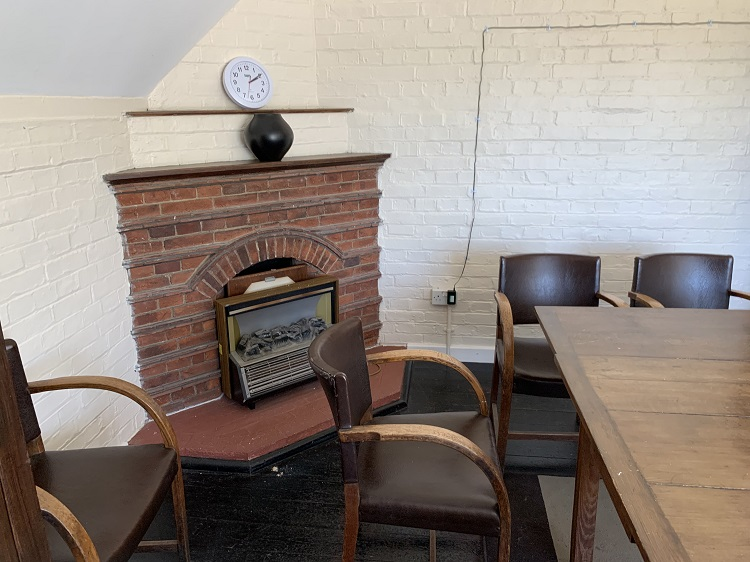

The Cater Room, previously known as the Committee Room.
Terry Cater was the 8th Chairman of WMH from 2004-2018 as well as a Worplesdon Parish councillor for many years.
Also as we know Terry’s history with all the hall and sport on the grounds must be second to none. 17 years a
trustee/ chairman. Also his father was very heavily involved in both as well. Terry’s father was chair of Worplesdon
Parish council during his years as a councillor from 1972-1973 then 1976-1985/6 until his death. Also the
wicketkeeper for Fairlands cricket team. He was described by Surrey Advertiser as “the spirit of Worplesdon”
something his son Terry has continued to do. During covid lockdown Terry volunteered to put new pictures
up in the Sime Gallery no easy task for man of mature years. Terry has also been involved as Hon secretary of
football club for 12 years and chairman of cricket club for 10 years and player of Worplesdon football and cricket
clubs for 42 years and still watches matches . Also was Chairman of the committee responsible to the Worplesdon
Parish council for the millennium book Worplesdon A Tale of Four Villages. He received Guildford Mayors award for
community service. A families dedication to the well being of the Memorial hall and recreational grounds.
As you can see both men 14 years chairman of WMH quite something. Obviously Sir Laurence Halsey the longest serving
chairman. Harry his father was known as Mr Worplesdon, he was a member of the territorial army , he was one of the
first to serve at Dunkirk and one of twenty in his unit to survive the Battle of Arnham. On his return to Worplesdon
he became involved in Fairlands Liddington Hall and Gravetts lane community association FLGCA. He and other
residents negotiated purchase of disused nissen hut on Fairlands later in 1963 involved in fund raising and building
of current community centre. He later became president of FLGCA. He even was invited to Queen’s garden party for
services to community.